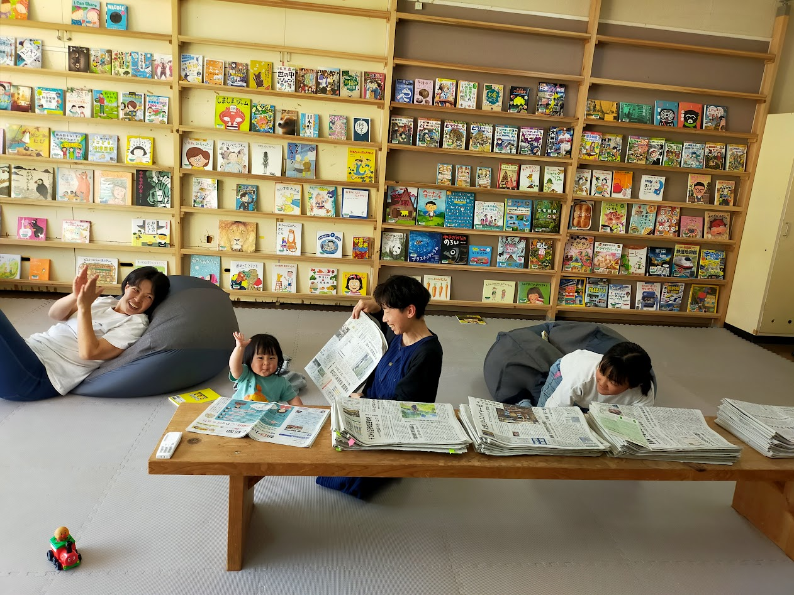
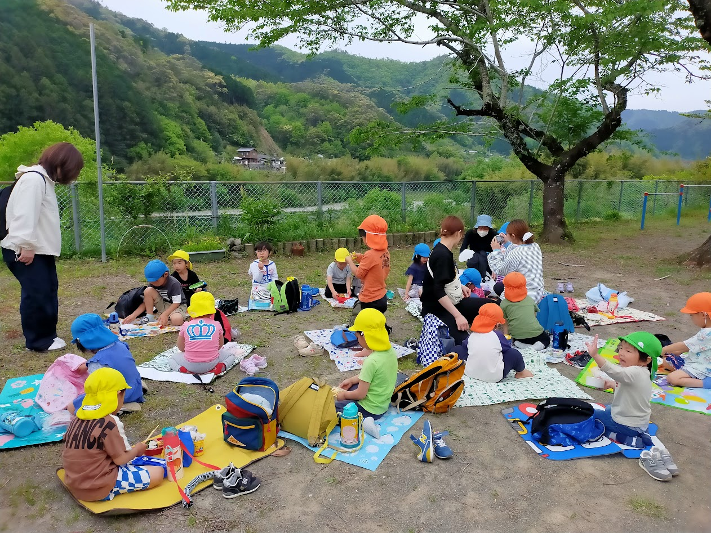

Gallery
地域での活動の記録



（本名：酒井 紀子）
ライター / AIコンテンツディレクター / コミュニティデザイナー
高知県四万十町
高知県四万十町を拠点に、ライター・AIコンテンツディレクター・コミュニティデザイナーとして活動しています。
10年以上のライティング・広報紙制作・コミュニティデザインの経験をベースに、
最新のAI技術を掛け合わせた「伝わるコンテンツ」を届けています。
10年以上
10年以上
Claude・Gemini・ChatGPT
Claude Code・Antigravity
MVP設計・情報設計
ワークフロー構築
行政・教育・地域支援
Cloudflare / GitHub / GAS
DTP・広報物制作
インスタ運用メインのオーナーのニーズに合わせた、更新不要・メンテナンスフリーの静的サイトをAI活用でディレクション・実装。SNS連携を前提とした情報設計が特徴。クライアントのビジネスの「仕組み」を理解した上での、柔軟な情報設計を行いました。
サイトを見る公式HPの更新を自動検知し、情報の同期・LINE通知まで行うフルオートのシビックテックサイト。住民からのアプローチのしやすさという観点から設計・実装まで一貫して担当。技術主導ではなく、「住民の使いやすさ」から逆算したシステムを形にしました。
サイトを見る計60号の広報紙PDF（両面）のデータ容量を極限まで圧縮することで、大量ファイルでも軽快に閲覧できるアーカイブサイトを実現。どんなITリテラシーの端末環境からでも、スムーズに情報にアクセスできるバリアフリーなUX設計です。
サイトを見る地域広報紙の編集やSNS発信をはじめ、Webサイトのディレクション・開発を行っています。また、自動化システム（GAS＋LINE通知等）の構築や運用、API設計にも対応可能です。
移住16年目。子育ちサークルを10年主宰・運営。現在は町社会教育委員長に就任。地域団体の代表として、行政委託事業「空き施設を活用した図書・公園機能の提供」を企画・運営しています。
地域での活動の記録

